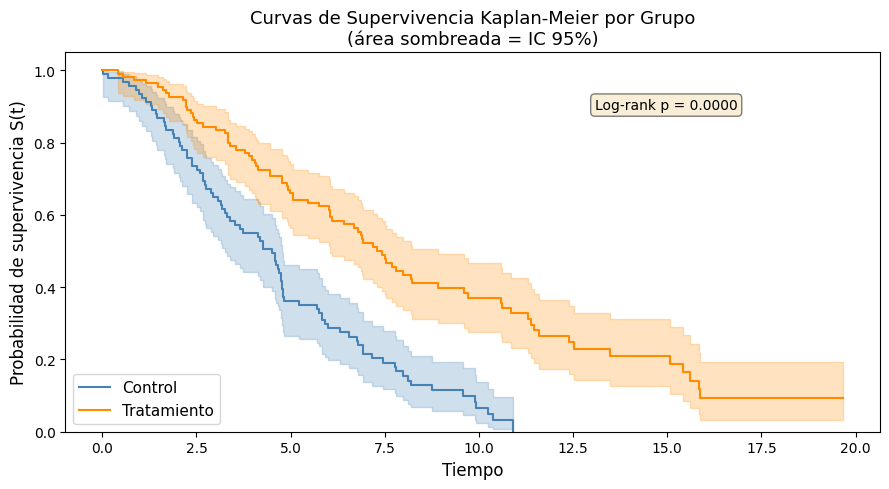
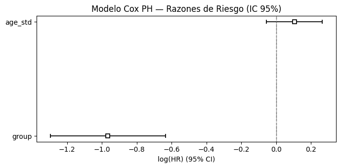
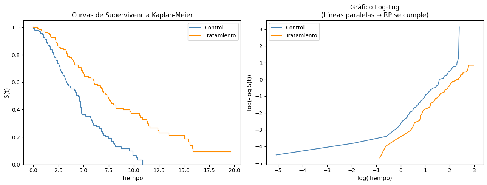

14-2: Introducción al Análisis de Supervivencia#
Curso: Modelos de Análisis Estadístico (MAE) — Universidad de los Andes
Docente: Prof. Alejandra Tabares
Semana: 14
1. Conceptos Fundamentales del Análisis de Supervivencia#
1.1 ¿Qué es el Análisis de Supervivencia?#
El análisis de supervivencia modela el tiempo hasta que ocurre un evento de interés (muerte, falla, recaída, abandono, etc.). El desafío clave que lo distingue de la regresión ordinaria es la censura: con frecuencia no observamos el evento en todos los sujetos.
1.2 La Función de Supervivencia#
Sea \(T \ge 0\) el tiempo (aleatorio) del evento. La función de supervivencia es:
\(S(0) = 1\) (todos están libres del evento al inicio)
\(S(\infty) = 0\) (eventualmente todos experimentan el evento)
\(S(t)\) es monótona no creciente y continua por la derecha
1.3 La Función de Riesgo#
La función de riesgo (tasa de riesgo instantánea) es:
Relaciones clave: $\( S(t) = \exp\!\left(-\int_0^t h(u)\,du\right) = \exp(-H(t)) \)$
donde \(H(t) = \int_0^t h(u)\,du\) es la función de riesgo acumulado.
1.4 Censura#
Tipo |
Descripción |
Ejemplo |
|---|---|---|
Censura por la derecha |
El tiempo del evento solo se sabe que supera el tiempo de observación |
Paciente aún vivo al final del estudio |
Censura por la izquierda |
El tiempo del evento solo se sabe que precede al tiempo de observación |
Sujeto ya había tenido el evento antes de ingresar al estudio |
Censura por intervalo |
El tiempo del evento cae dentro de un intervalo conocido |
Visitas de seguimiento periódicas |
La censura por la derecha es la más común. Una observación \((t_i, \delta_i)\) registra:
\(t_i\) = tiempo observado (tiempo del evento si \(\delta_i=1\), tiempo de censura si \(\delta_i=0\))
\(\delta_i\) = indicador del evento (\(1\) = evento observado, \(0\) = censurado)
¿Por qué no ignorar las observaciones censuradas? Hacerlo introduce sesgo de selección: los sujetos censurados pueden haber tenido tiempos de supervivencia más largos, por lo que eliminarlos subestima \(S(t)\).
import numpy as np
import pandas as pd
import matplotlib.pyplot as plt
import warnings
warnings.filterwarnings('ignore')
np.random.seed(2024)
n = 200
# ── Simular datos de supervivencia con censura por la derecha ────────────────────────
# Dos grupos: tratamiento (group=1) y control (group=0)
group = np.random.binomial(1, 0.5, n)
# Tiempos de evento verdaderos de una distribución Weibull
# El grupo de tratamiento tiene mayor supervivencia (escala = 10 vs 6)
scale_true = np.where(group == 1, 10.0, 6.0)
shape_weibull = 1.5
T_true = scale_true * np.random.weibull(shape_weibull, n)
# Tiempos de censura de Uniform(5, 20) — independientes del tiempo del evento
C = np.random.uniform(5, 20, n)
# Tiempo observado e indicador de evento
T_obs = np.minimum(T_true, C)
delta = (T_true <= C).astype(int) # 1 = evento observado
# Una covariable continua: edad (estandarizada)
age = np.random.normal(55, 10, n)
age_std = (age - age.mean()) / age.std()
df = pd.DataFrame({
'time': T_obs,
'event': delta,
'group': group,
'age': age,
'age_std': age_std
})
print('Conjunto de datos de supervivencia simulado')
print('='*45)
print(f'n = {n} sujetos')
print(f'Eventos observados: {delta.sum()} ({100*delta.mean():.1f}%)')
print(f'Censurados: {n - delta.sum()} ({100*(1-delta.mean()):.1f}%)')
print()
print(df.head(10).to_string(index=False))
Conjunto de datos de supervivencia simulado
=============================================
n = 200 sujetos
Eventos observados: 164 (82.0%)
Censurados: 36 (18.0%)
time event group age age_std
6.777428 1 1 52.072228 -0.343024
9.211833 0 1 68.504804 1.275301
2.122376 1 0 52.774692 -0.273843
0.145469 1 0 41.784036 -1.356233
9.909261 1 0 55.128207 -0.042062
9.914552 1 0 47.852224 -0.758621
6.185710 0 1 50.691939 -0.478958
2.232779 1 1 90.761341 3.467186
4.810758 1 0 54.201983 -0.133279
4.596943 1 0 37.399405 -1.788043
2. El Estimador de Kaplan-Meier#
El estimador de Kaplan-Meier (KM) es un estimador de máxima verosimilitud no paramétrico de \(S(t)\). Utiliza solo los tiempos de evento observados y tiene en cuenta correctamente las observaciones censuradas.
Fórmula#
Sean \(t_1 < t_2 < \cdots < t_k\) los tiempos de evento distintos observados (no tiempos de censura). En cada \(t_j\):
\(d_j\) = número de eventos (muertes) en \(t_j\)
\(n_j\) = número en riesgo justo antes de \(t_j\) (que aún no han tenido el evento ni han sido censurados)
Propiedades#
Función escalonada que decrece solo en los tiempos de evento observados
Las observaciones censuradas contribuyen al conjunto de riesgo \(n_j\) pero no provocan una caída en \(\hat{S}\)
La fórmula de Greenwood da la varianza: \(\widehat{\text{Var}}[\hat{S}(t)] = \hat{S}(t)^2 \sum_{j:\,t_j \le t} \frac{d_j}{n_j(n_j - d_j)}\)
El IC al 95% se construye típicamente en la escala log o log-log para mejor cobertura cerca de 0 y 1
Prueba Log-Rank#
Para comparar \(\hat{S}(t)\) entre dos grupos, la prueba log-rank utiliza:
donde \(E_{1j}\) es el número esperado de eventos en el grupo 1 en el tiempo \(t_j\) bajo \(H_0: S_1(t) = S_2(t)\).
# ── Kaplan-Meier: intentar lifelines, usar implementación manual como alternativa ─────
def km_manual(times, events):
"""
Estimador de Kaplan-Meier manual.
Devuelve arreglos: t_unique (tiempos de evento), S_hat, lower_95, upper_95
"""
data = pd.DataFrame({'t': times, 'd': events}).sort_values('t')
t_unique = np.sort(np.unique(data.loc[data['d'] == 1, 't']))
n_total = len(times)
S = 1.0
greenwood_sum = 0.0
S_vals, lower_vals, upper_vals = [], [], []
n_at_risk = n_total
prev_t = -np.inf
for t in t_unique:
# Actualizar conjunto de riesgo: restar los que tienen tiempo observado < t
n_at_risk -= np.sum((data['t'] < t) & (data['t'] > prev_t))
d = np.sum((data['t'] == t) & (data['d'] == 1))
if n_at_risk > 0 and d > 0:
S *= (1 - d / n_at_risk)
if n_at_risk > d:
greenwood_sum += d / (n_at_risk * (n_at_risk - d))
se = S * np.sqrt(greenwood_sum)
S_vals.append(S)
lower_vals.append(max(0, S - 1.96 * se))
upper_vals.append(min(1, S + 1.96 * se))
prev_t = t
return t_unique, np.array(S_vals), np.array(lower_vals), np.array(upper_vals)
try:
from lifelines import KaplanMeierFitter
from lifelines.statistics import logrank_test
USE_LIFELINES = True
print('lifelines disponible — usando KaplanMeierFitter')
except ImportError:
USE_LIFELINES = False
print('lifelines no instalado — usando implementación KM manual')
fig, ax = plt.subplots(figsize=(9, 5))
colors = {0: 'steelblue', 1: 'darkorange'}
labels = {0: 'Control', 1: 'Tratamiento'}
if USE_LIFELINES:
kmf = KaplanMeierFitter()
for g in [0, 1]:
mask = df['group'] == g
kmf.fit(df.loc[mask, 'time'], df.loc[mask, 'event'], label=labels[g])
kmf.plot_survival_function(ax=ax, ci_show=True, color=colors[g])
# Prueba log-rank
lr = logrank_test(df.loc[df['group']==0,'time'], df.loc[df['group']==1,'time'],
df.loc[df['group']==0,'event'], df.loc[df['group']==1,'event'])
print(f'Prueba log-rank: chi2={lr.test_statistic:.3f}, p={lr.p_value:.4f}')
ax.text(0.65, 0.85, f'Log-rank p = {lr.p_value:.4f}',
transform=ax.transAxes, fontsize=10,
bbox=dict(boxstyle='round', facecolor='wheat', alpha=0.5))
else:
for g in [0, 1]:
mask = df['group'] == g
t_u, S_u, lo, hi = km_manual(df.loc[mask,'time'].values,
df.loc[mask,'event'].values)
ax.step(np.concatenate([[0], t_u]), np.concatenate([[1], S_u]),
where='post', color=colors[g], label=labels[g])
ax.fill_between(np.concatenate([[0], t_u]),
np.concatenate([[1], lo]),
np.concatenate([[1], hi]),
step='post', alpha=0.2, color=colors[g])
ax.set_xlabel('Tiempo', fontsize=12)
ax.set_ylabel('Probabilidad de supervivencia S(t)', fontsize=12)
ax.set_title('Curvas de Supervivencia Kaplan-Meier por Grupo\n(área sombreada = IC 95%)', fontsize=13)
ax.legend(fontsize=11)
ax.set_ylim(0, 1.05)
plt.tight_layout()
plt.show()
lifelines disponible — usando KaplanMeierFitter
Prueba log-rank: chi2=33.802, p=0.0000

3. Modelo de Riesgos Proporcionales de Cox#
El modelo Cox PH (Cox 1972) es el modelo de regresión más utilizado en el análisis de supervivencia. Es semi-paramétrico: el riesgo basal \(h_0(t)\) se deja sin especificar, mientras que el efecto de las covariables entra de forma multiplicativa.
Modelo#
Propiedad de Riesgos Proporcionales#
El cociente de riesgos entre dos sujetos con covariables \(\mathbf{x}\) y \(\mathbf{x}^*\) es constante en el tiempo:
Interpretación — Razones de Riesgo#
\(\hat{\text{HR}}_j = e^{\hat{\beta}_j}\): cambio multiplicativo en el riesgo por un aumento de una unidad en \(x_j\), manteniendo los demás fijos
\(\text{HR} > 1\): mayor riesgo (evento más rápido, peor supervivencia)
\(\text{HR} < 1\): menor riesgo (evento más lento, mejor supervivencia)
\(\text{HR} = 1\): sin efecto
Estimación por Verosimilitud Parcial#
Cox propuso estimar \(\boldsymbol{\beta}\) maximizando la verosimilitud parcial:
donde \(\mathcal{R}(t_i)\) es el conjunto de riesgo en el tiempo \(t_i\) (todos los sujetos aún bajo observación). El riesgo basal \(h_0(t)\) se cancela, lo que hace posible la estimación sin especificarlo.
# ── Modelo Cox PH ───────────────────────────────────────────────────────────────────────
try:
from lifelines import CoxPHFitter
USE_LIFELINES_COX = True
print('Ajustando modelo Cox con lifelines.CoxPHFitter')
except ImportError:
USE_LIFELINES_COX = False
print('lifelines no disponible — usando statsmodels PHReg')
if USE_LIFELINES_COX:
cox_df = df[['time', 'event', 'group', 'age_std']].copy()
cph = CoxPHFitter()
cph.fit(cox_df, duration_col='time', event_col='event')
cph.print_summary()
# Razones de riesgo con IC 95%
hr_table = pd.DataFrame({
'coef': cph.params_,
'HR': np.exp(cph.params_),
'HR_lower': np.exp(cph.confidence_intervals_['95% lower-bound']),
'HR_upper': np.exp(cph.confidence_intervals_['95% upper-bound']),
'p': cph.summary['p']
}).round(4)
print('\nTabla de Razones de Riesgo')
print('='*55)
print(hr_table.to_string())
else:
# Alternativa con statsmodels
from statsmodels.duration.hazard_regression import PHReg
endog = df['time'].values
status = df['event'].values
exog = df[['group', 'age_std']].values
cox_sm = PHReg(endog, exog, status=status,
exog_names=['group', 'age_std']).fit()
print(cox_sm.summary())
hr_table = pd.DataFrame({
'coef': cox_sm.params,
'HR': np.exp(cox_sm.params),
'p': cox_sm.pvalues
}, index=['group', 'age_std']).round(4)
print('\nTabla de Razones de Riesgo')
print(hr_table.to_string())
Ajustando modelo Cox con lifelines.CoxPHFitter
| model | lifelines.CoxPHFitter |
|---|---|
| duration col | 'time' |
| event col | 'event' |
| baseline estimation | breslow |
| number of observations | 200 |
| number of events observed | 164 |
| partial log-likelihood | -722.31 |
| time fit was run | 2026-03-20 22:25:07 UTC |
| coef | exp(coef) | se(coef) | coef lower 95% | coef upper 95% | exp(coef) lower 95% | exp(coef) upper 95% | cmp to | z | p | -log2(p) | |
|---|---|---|---|---|---|---|---|---|---|---|---|
| group | -0.97 | 0.38 | 0.17 | -1.30 | -0.63 | 0.27 | 0.53 | 0.00 | -5.72 | <0.005 | 26.45 |
| age_std | 0.10 | 1.11 | 0.08 | -0.06 | 0.27 | 0.94 | 1.31 | 0.00 | 1.27 | 0.20 | 2.29 |
| Concordance | 0.61 |
|---|---|
| Partial AIC | 1448.62 |
| log-likelihood ratio test | 33.49 on 2 df |
| -log2(p) of ll-ratio test | 24.15 |
Tabla de Razones de Riesgo
=======================================================
coef HR HR_lower HR_upper p
covariate
group -0.9655 0.3808 0.2735 0.5302 0.0000
age_std 0.1047 1.1103 0.9447 1.3050 0.2042
# ── Gráfico de bosque (forest plot) de razones de riesgo ──────────────────────────────
if USE_LIFELINES_COX:
fig, ax = plt.subplots(figsize=(7, 3.5))
cph.plot(ax=ax)
ax.set_title('Modelo Cox PH — Razones de Riesgo (IC 95%)', fontsize=12)
ax.axvline(0, color='grey', linestyle='--', linewidth=0.8)
plt.tight_layout()
plt.show()
else:
# Gráfico de bosque manual
vars_plot = ['group', 'age_std']
hr_vals = np.exp(cox_sm.params)
conf = cox_sm.conf_int()
hr_lo = np.exp(conf[:, 0])
hr_hi = np.exp(conf[:, 1])
fig, ax = plt.subplots(figsize=(7, 3))
y_pos = np.arange(len(vars_plot))
ax.errorbar(hr_vals, y_pos,
xerr=[hr_vals - hr_lo, hr_hi - hr_vals],
fmt='o', color='steelblue', ecolor='steelblue',
capsize=5, markersize=8)
ax.axvline(1, color='grey', linestyle='--', linewidth=0.9)
ax.set_yticks(y_pos)
ax.set_yticklabels(vars_plot, fontsize=11)
ax.set_xlabel('Razón de riesgo (escala log)', fontsize=11)
ax.set_xscale('log')
ax.set_title('Cox PH — Razones de Riesgo (IC 95%)', fontsize=12)
plt.tight_layout()
plt.show()

4. Verificación del Supuesto de Riesgos Proporcionales#
El supuesto de RP — que las razones de riesgo son constantes en el tiempo — debe verificarse antes de confiar en los resultados del modelo Cox.
Método 1: Gráfico Log-Log de Supervivencia#
Bajo RP, las curvas KM transformadas log-log para dos grupos deben ser paralelas (distancia vertical constante):
Las curvas no paralelas sugieren que el supuesto de RP es violado.
Método 2: Residuos de Schoenfeld (prueba formal)#
Los residuos de Schoenfeld para la covariable \(j\) en el tiempo de evento \(t_i\):
Si se cumple RP, los residuos de Schoenfeld son no correlacionados con el tiempo. Una correlación significativa (prueba de Grambsch-Therneau) indica efectos que varían en el tiempo.
Método 3: Coeficientes que Varían en el Tiempo#
Agregar una interacción \(x_j \cdot g(t)\) (p. ej., \(g(t) = \ln(t)\)) al modelo. Un término de interacción significativo señala violación del RP.
¿Qué hacer cuando falla RP?#
Solución |
Cuándo usarla |
|---|---|
Estratificar por la variable que viola el supuesto |
La variable es un factor de confusión no relevante |
Agregar coeficiente que varía en el tiempo |
Se desea cuantificar el efecto variable en el tiempo |
Modelo de Tiempo de Falla Acelerado (AFT) |
Alternativa paramétrica al Cox |
Modelo paramétrico flexible (Royston-Parmar) |
Se necesita un riesgo basal suavizado |
# ── Gráfico log-log para verificar el supuesto de RP ──────────────────────────────────
fig, axes = plt.subplots(1, 2, figsize=(13, 5))
if USE_LIFELINES:
kmf2 = KaplanMeierFitter()
for g in [0, 1]:
mask = df['group'] == g
kmf2.fit(df.loc[mask, 'time'], df.loc[mask, 'event'], label=labels[g])
# Gráfico KM estándar
kmf2.plot_survival_function(ax=axes[0], ci_show=False, color=colors[g])
# Gráfico log-log
t_vals = kmf2.survival_function_.index.values[1:]
S_vals = kmf2.survival_function_.iloc[1:, 0].values
lls = np.log(-np.log(np.where(S_vals > 0, S_vals, 1e-10)))
axes[1].plot(np.log(t_vals), lls, label=labels[g], color=colors[g])
else:
for g in [0, 1]:
mask = df['group'] == g
t_u, S_u, lo, hi = km_manual(df.loc[mask,'time'].values,
df.loc[mask,'event'].values)
axes[0].step(np.concatenate([[0], t_u]), np.concatenate([[1], S_u]),
where='post', color=colors[g], label=labels[g])
lls = np.log(-np.log(np.where(S_u > 0, S_u, 1e-10)))
axes[1].plot(np.log(t_u), lls, label=labels[g], color=colors[g], marker='o', markersize=3)
axes[0].set_xlabel('Tiempo', fontsize=11)
axes[0].set_ylabel('S(t)', fontsize=11)
axes[0].set_title('Curvas de Supervivencia Kaplan-Meier', fontsize=12)
axes[0].legend(fontsize=10)
axes[0].set_ylim(0, 1.05)
axes[1].set_xlabel('log(Tiempo)', fontsize=11)
axes[1].set_ylabel('log(-log S(t))', fontsize=11)
axes[1].set_title('Gráfico Log-Log\n(Líneas paralelas → RP se cumple)', fontsize=12)
axes[1].legend(fontsize=10)
axes[1].axhline(0, color='grey', linestyle=':', linewidth=0.7)
plt.tight_layout()
plt.show()
print('\nInterpretación:')
print(' Si las líneas en el gráfico log-log son aproximadamente paralelas, el')
print(' supuesto de riesgos proporcionales se ve respaldado para la variable grupo.')
if USE_LIFELINES_COX:
print('\nPrueba de residuos de Schoenfeld (lifelines):')
try:
from lifelines.statistics import proportional_hazard_test
ph_test = proportional_hazard_test(cph, cox_df, time_transform='rank')
print(ph_test.summary.to_string())
print('\n p > 0.05 para cada variable: sin evidencia de violación de RP')
except Exception as e:
print(f' No se pudo ejecutar la prueba de RP: {e}')

Interpretación:
Si las líneas en el gráfico log-log son aproximadamente paralelas, el
supuesto de riesgos proporcionales se ve respaldado para la variable grupo.
Prueba de residuos de Schoenfeld (lifelines):
test_statistic p -log2(p)
age_std 1.945849 0.163035 2.616748
group 0.971870 0.324214 1.624980
p > 0.05 para cada variable: sin evidencia de violación de RP